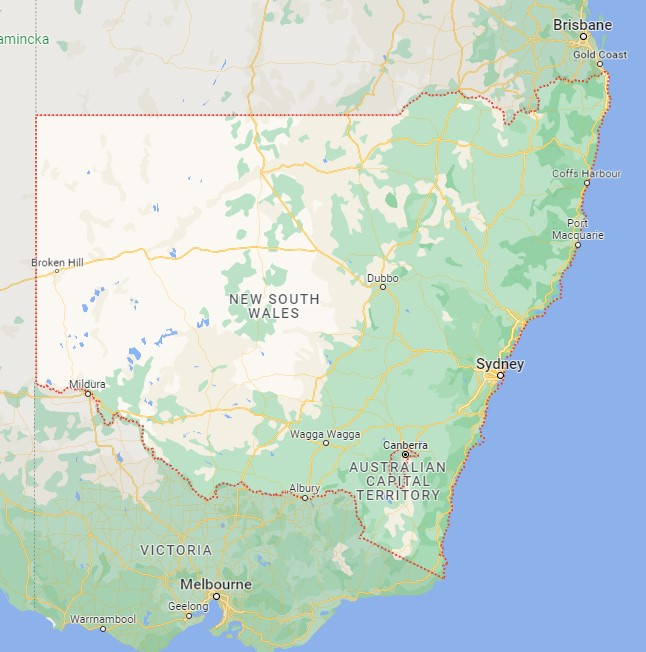

I'm from New South Wales
I was born on the Northern Beach in Sydney, New South Wales, Australia.
Here are a few pages featuring where i'm from.
The following two links will take you to;
1. A link to Sydney, the city I am from in New South Wales.
2. A link to the Northern Beaches, which is the area of Sydney i'm from.
Link to Sydney page
Link to Northern Beaches page
The following images are;
1. A map of New South Wales
2. The state flag of New South Wales
3. the organized regions of New South Wales



Facts about New South Wales
Capital
- Sydney is the capital of New South Wales (NSW). The city of Sydney is located on the eastern coast of NSW.
Population
- Nearly a third of all Australians live in New South Wales, with most living in the state capital of Sydney.
- NSW is Australia's largest state economy. NSW has the highest population of any state in Australia, with 8,172,500 residents as of 31 December 2020.
- Roughly 64.5% of the state's population live in Greater Sydney.
- NSW has the fastest growing population in Australia growing by roughly 106,100 people annually. Greater Sydney and Newcastle have the highest population densities in the state, with 391 and 423 people per square kilometre.
Culture
- More than 275 different languages are spoken and 144 religions are practised in NSW. Almost a third of NSW residents were born overseas, while 37% had both parents born overseas. NSW's top five fastest-growing migrant groups are from Asia.
Aboriginal people in NSW
- New South Wales has Australia’s largest population of Aboriginal Australians.
Geography of NSW
- The state of NSW is divided by natural features into four distinct geographical sections;
The Coast
- A thin coastal strip stretching along 1460 km from the subtropical Northern Rivers region near Queensland, through the mid-north Coast, Hunter, Sydney, Illawarra and Shoalhaven down to the cooler far south coast.
The Mountains
- The Great Dividing Range, which includes the Snowy Mountains, the Northern, Central and Southern Tablelands, the Southern Highlands, and the South West Slopes. Although these mountains aren't steep, many peaks rise above 1000 metres high, and they are one of the oldest mountain chains on earth.
The Central Plains
- The cultivated central plains spread 500 km from east to west and are the agricultural powerhouse of the NSW economy due to the rich, fertile soil and adequate water supply.
The Western Plains
- The arid Western Plains cover more than two thirds of the state, though they are sparsely populated compared to the coastal regions. The land is fertile but has low levels of rainfall and inadequate river systems.